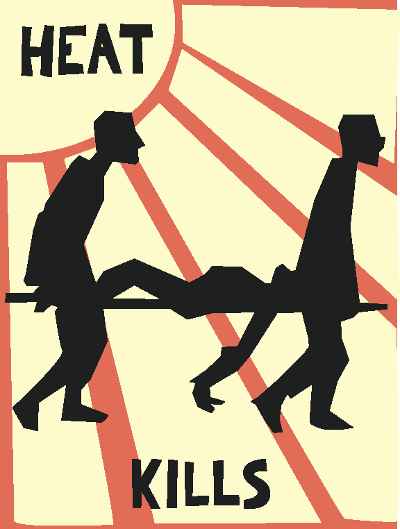

Based on a poster from the May 68 revolution (which in turn is based on a work from some finnish guy from the 1890s), and a popular matchbox design. The bland colors speak of ghastly death, dust and dirt. Crude hand-tooled look for traditional propaganda feel (to make the message seem more important than the poster design, and to make it more visually accessible to old folks). The downside of the design is that it looks like a poster for an old Sci-Fi movie (would it be taken seriously or are they running reruns of an obscure 50's film in the neighbourhood movie theatre?). It also looks like commie propaganda which might dishearten american onlookers (perhaps better suited for European, South American, Asian etc. usage).
designed by joel westerberg
Back to Viridian index at Unsafe